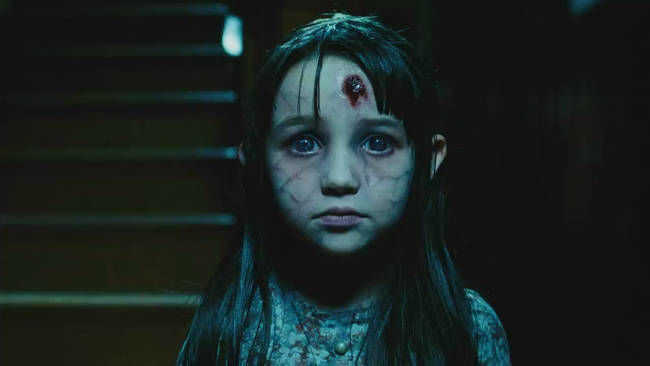

Di saat ku bangun pagi dengan segarnya ku dengar tawa seorang gadis kecil berlari di sekeliling Rumah. di saat aku keluar ingin menyapa gadis itu sambil melihat jam dinding akupun tidak jadi membuka pintu setelah melihat jam dinding masih pukul 02.00 Dini hari
karena kedua orang tuaku meninggal aku di rawat oleh bibi dan pamanku. mereka telah ku anggap sebagai keluarga dan orang tua penggantiku tetapi mereka tidak pernah menganggapku keluarga, Bertahun tahun berlalu Caci makian mereka dan karena ketidaknyamanan mereka karena bau badanku setelah kerka bagaikan pembantu, walau begitu aku sangat menyayangi mereka. Hari hari telah berlalu sekarang mereka selalu memakai penutup hidung yang indah di saat itu akupun senang tetapi heran kenapa mereka memakai penutup hidung itu setiap hari ah sudahlah yang penting mereka juga tersenyum ke padaku sangat lebar dengan rahang terpisah
pekerjaan ku hanyalah seorang ojek online dari aplikasi gojek, hari ini pacarku memutuskan ku karena kurangnya materi. "bagai gelas yang pecah" sungguh pedih hati ini menghadapi ganasnya takdir dunia fana. di saat sayu" melihat ombak, terlihat gadis cantik nan menawan, dia datang sebagai obat penghibur lara. hari" telah berlalu kenangan indah berharga telah kami lalui. tiba saatnya dia ingin aku menikahinya, secara spontan ku jawab iya. hati ini bagaikan bunga dan hidup lebih berwarna disaat dia ingin membawaku ke rumahnya kaki dan badan ini terasa dingin dan basah sehingga aku sadar bahwa rumah sang gadis berbaju hijau tempatnya di tengah laut, walau begitu aku mencintainya dan selalu dengannya di manapun dia berada aku tak mau pisah darinya